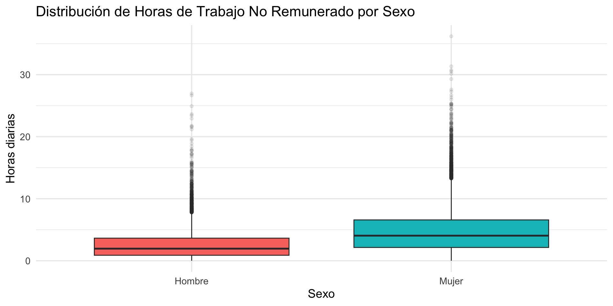
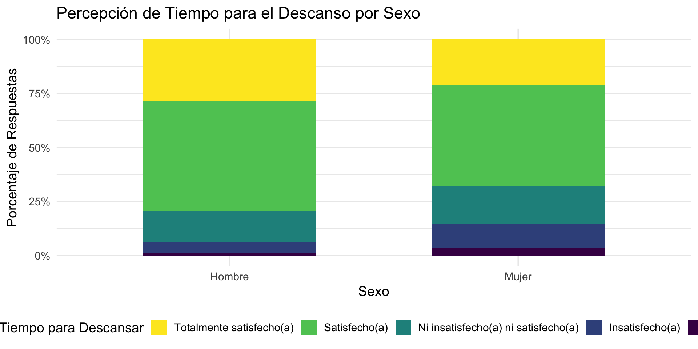
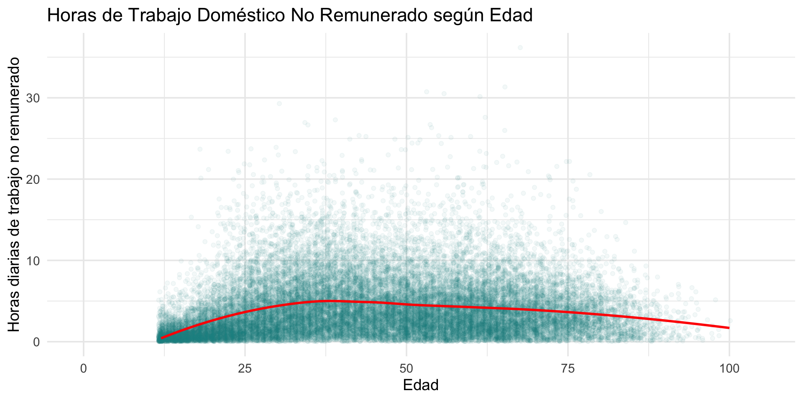

| sexo_factor | Media | Mediana | Desv. Estándar |
|---|---|---|---|
| Hombre | 2.86 | 2.10 | 2.68 |
| Mujer | 4.96 | 4.11 | 3.90 |
Introducción al Análisis Bivariado y Tipos de Asociación
Unidad 5: Estadística Descriptiva Bivariada
Gabriel Sotomayor
2025-11-10
Objetivos de la Sesión de Hoy
- Definir el análisis bivariado y la distinción entre variable explicativa (X) y variable respuesta (Y).
- Clasificar los tres tipos de relaciones bivariadas según el nivel de medición de las variables.
- Introducir el concepto estadístico de independencia como punto de referencia para evaluar asociaciones.
- Asociar cada tipo de relación con su herramienta de análisis numérico y visual principal.
1. De Describir a Relacionar
El Salto al Análisis Bivariado
Hasta ahora, en la Unidad 4, nos hemos enfocado en el análisis univariado: describir cada variable por separado (su forma, centro y dispersión).
Sin embargo, el corazón del análisis sociológico reside en entender relaciones. - ¿El género afecta la carga de trabajo doméstico? - ¿El nivel socioeconómico se relaciona con la percepción sobre el uso del tiempo?
Hoy comenzamos el análisis bivariado: el estudio de la relación entre dos variables a la vez.
Variable Explicativa y Variable Respuesta
En el análisis bivariado, asignamos roles a nuestras variables para estructurar nuestra pregunta de investigación.
- Variable Explicativa (o Independiente, X):
- Es la variable que creemos que influye, explica o predice un cambio en la otra.
- Variable Respuesta (o Dependiente, Y):
- Es la variable que mide el resultado o el fenómeno que queremos explicar.
Ejemplo: En la pregunta “¿Cómo afecta el sexo (X) a la cantidad de horas de trabajo no remunerado (Y)?”, el sexo es la variable explicativa y las horas de trabajo son la variable respuesta.
Convención: Al graficar, la variable explicativa (X) siempre va en el eje horizontal y la variable respuesta (Y) en el eje vertical.
El Problema Sociológico del Uso del Tiempo
El tiempo es un recurso universal, pero su distribución y uso no lo son. Es un recurso escaso que se reparte de manera desigual según ejes clave de la estructura social como el sexo, el nivel socioeconómico o el territorio.
Gran parte del trabajo que sostiene a la sociedad, como las tareas domésticas y de cuidados, es trabajo no remunerado, históricamente invisibilizado y feminizado.
La Encuesta Nacional de Uso del Tiempo (ENUT) es la principal herramienta en Chile para medir este fenómeno. Su objetivo es cuantificar cómo las personas distribuyen su tiempo entre el trabajo remunerado, el trabajo no remunerado y las actividades personales, haciendo visible lo invisible para el diseño de políticas públicas más equitativas.
2. La Caja de Herramientas del Análisis Bivariado
Tres Tipos de Relaciones
La forma en que analizamos una relación bivariada depende fundamentalmente del tipo de variables que estemos cruzando (categóricas o cuantitativas).
Esto nos da tres casos principales, cada uno con su propio set de herramientas:
- Categórica (X) ➞ Cuantitativa (Y)
- Categórica (X) ➞ Categórica (Y)
- Cuantitativa (X) ➞ Cuantitativa (Y)
Caso 1: Categórica (X) ➞ Cuantitativa (Y)
Pregunta Clave: ¿Existen diferencias en el promedio (o la distribución) de una variable cuantitativa entre distintos grupos?
Ejemplo: ¿Dedican hombres y mujeres, en promedio, la misma cantidad de tiempo al trabajo doméstico no remunerado (
t_tnr_dt)?Herramienta de Análisis Numérico:
- Comparación de estadísticos descriptivos por grupo (medias, medianas, etc.).
Herramienta de Análisis Visual:
- Boxplots comparativos o gráficos de densidad por grupo.
Caso 1: Tabla de Estadísticos por Grupo
Analizamos las horas diarias de trabajo no remunerado (t_tnr_dt) por sexo.
Interpretación: La tabla muestra una brecha considerable. En promedio, las mujeres dedican más del doble de horas diarias al trabajo no remunerado que los hombres (Media de 5 vs. 2.9).
Caso 1: Gráfico de Boxplots Comparativos
La visualización confirma la brecha observada en la tabla.

Interpretación: El boxplot muestra que no solo la mediana de las mujeres es más alta, sino que toda la distribución está desplazada hacia arriba. El 75% de las mujeres (límite superior de la caja) dedica más tiempo que casi el 75% de los hombres.
Caso 2: Categórica (X) ➞ Categórica (Y)
Pregunta Clave: ¿La probabilidad de pertenecer a una categoría de Y depende de la categoría de X a la que se pertenece?
Ejemplo: ¿La percepción de tener suficiente tiempo para el descanso (
bs2) se relaciona con el sexo de la persona?Herramienta de Análisis Numérico:
- Tablas de contingencia (tablas cruzadas) con porcentajes condicionales.
Herramienta de Análisis Visual:
- Gráficos de barras apiladas al 100% (
position="fill").
- Gráficos de barras apiladas al 100% (
Caso 2: Tabla de Contingencia
Analizamos la relación entre sexo (X) y bs2 (percepción de tiempo para el descanso, Y).
| bs2_factor | Hombre | Mujer |
|---|---|---|
| Totalmente insatisfecho(a) | 1.0 | 3.3 |
| Insatisfecho(a) | 5.2 | 11.5 |
| Ni insatisfecho(a) ni satisfecho(a) | 14.2 | 17.3 |
| Satisfecho(a) | 51.2 | 46.7 |
| Totalmente satisfecho(a) | 28.3 | 21.2 |
Interpretación: La tabla muestra que un porcentaje mayor de hombres (24.5%) que de mujeres (19.2%) siente que “Siempre” tiene tiempo suficiente para el descanso.
Caso 2: Gráfico de Barras Apiladas al 100%
Este gráfico visualiza los porcentajes de la tabla anterior.

Caso 3: Cuantitativa (X) ➞ Cuantitativa (Y)
Pregunta Clave: A medida que X aumenta, ¿Y tiende a aumentar, disminuir o no cambia?
Ejemplo: A mayor
edad(X), ¿cómo cambia el tiempo dedicado al trabajo doméstico no remunerado (t_tnr_dt, Y)?Herramienta de Análisis Numérico:
- Coeficiente de correlación.
Herramienta de Análisis Visual:
- Gráfico de dispersión (Scatterplot).
Caso 3: Tabla de Correlación
Calculamos la correlación entre edad y t_tnr_dt para cuantificar la relación lineal.
| Correlacion |
|---|
| 0.104 |
Interpretación: La correlación es 0.1, un valor extremadamente cercano a cero. Esto confirma numéricamente que no existe una relación lineal entre la edad y el tiempo dedicado al trabajo no remunerado. Pero, como vimos en el gráfico, ¿significa esto que no hay ninguna relación en absoluto?
Caso 3: Gráfico de Dispersión
El gráfico de dispersión nos cuenta una historia más compleja.

Interpretación: ¡La relación no es lineal, sino curvilínea! El tiempo de trabajo no remunerado aumenta hasta la mediana edad (aprox. 40-50 años) y luego comienza a disminuir. Esto demuestra por qué siempre debemos visualizar los datos: la correlación por sí sola nos habría hecho concluir erróneamente que no había una relación importante.
El Punto de Referencia: Independencia Estadística
Antes de poder decir que dos variables están “relacionadas”, necesitamos un punto de referencia.
Definición de Independencia: Dos variables son estadísticamente independientes si conocer el valor de una no nos da ninguna información sobre el valor probable de la otra.
El Objetivo del Análisis Bivariado: Nuestro trabajo como analistas es buscar evidencia en contra de la independencia. Buscamos patrones sistemáticos que demuestren que las variables sí están relacionadas.
- En nuestros tres ejemplos, encontramos evidencia clara de que las variables no son independientes.
Cierre y Próximos Pasos
Resumen de la sesión de hoy:
- El análisis bivariado estudia la relación entre una variable explicativa (X) y una respuesta (Y).
- Existen tres casos principales de análisis bivariado, cada uno con sus propias herramientas visuales y numéricas.
- El concepto de independencia es nuestro punto de partida: buscamos evidencia de que las variables están, de hecho, asociadas.
En el práctico de hoy:
- Aplicarán estas herramientas en R para explorar los tres tipos de relaciones utilizando la Encuesta CASEN 2022.
Adelanto de la próxima clase:
- Nos sumergiremos en el Caso 2 (Categórica ➞ Categórica). Aprenderemos a construir e interpretar tablas de contingencia y a introducir una tercera variable de control.